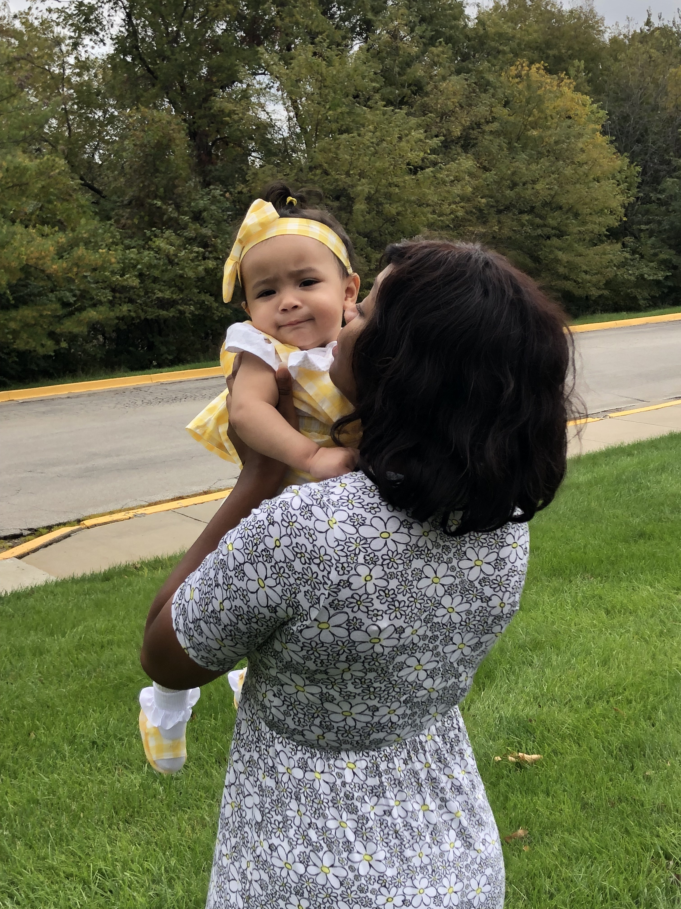

Having a child is a heartwarming, loving, caring, and very new experience. To all of the new mothers out there, no. You are not alone. You aren’t the only one, and you do not have any issues. Firstly, I would like to congratulate you on the wonderful experience of giving birth. You’re alive, your baby is alive, and you are with your baby. Be proud.

Secondly, just take a moment to re-evaluate yourself in the moment. You have a lot on your mind with a lot on your plate. Embrace it. Now, that we have a clearer head, we can continue. Why does it feel like your baby loves your mother, mother in law, or grandmother more than you? Firstly, no matter what you may think, your child loves you. You are the mother, the provider, the decider. You gave birth to a beautiful baby, so it is not your position you have to worry about. You do not need to worry at all, in all honesty. Are you a hard-working mother that had to go back to work months after giving birth? If you work a full-time job, 5 days a week your child is likely to get comfortable with who is providing and carping for them at the time being. Key word: time being. I am a mother that had to go back to work after giving birth to my daughter, and the split was terrible, but I knew it was necessary for stability. My daughter before I went back to work loved to be around me, hug me, love me, and smile at me. After I had to go backs to work and drop my daughter off at her grandmother’s house, it all changed.
I found myself having to pick my daughter up without her wanting to be held by me. She would reach out her hands for her grandmother like I never existed. She would throw tiny temper tantrums when she was not held by her grandmother. That devastated me to the point of disbelief. Did I fail my child? Did I do something wrong?

The Reality
The point that I did not want to understand was why? I already knew the reason. My daughter began to get comfortable, grow an attachment, and love the caregiver available to provide for her. I was gone 8 hours out of the day, 5 days a week so its understandable.
The Understanding
Understanding the psychological aspect of your baby is very important. In the Developmental Psychology Theory, Erikson goes into depth with the reality of Stability Vs. Change. My daughter was always in Heterotypic stability. My daughter was always attached to me, at home with me, cuddling with me, sleeping with me, so she was used to me being there. I wouldn’t even say with me, because she didn’t know the difference between me as a mother, or me as a caregiver (yet). She was used to being near me constantly, but when things changed, she was able to catch on, but attach on to the other care giver as well. Gratefully, she wasn’t attached to the point of hysterically losing her mind every time she was off of my hip when I dropped her off. Since she was used to one person caring for her, she transitioned to accepting love and care from her grandmother. Babies love for people grows like anyone else, if someone is caring and loving them constantly, then the baby will definitely feel it.
No, I am not saying you aren’t taking care of your baby, or treating your baby right, or loving your baby, but consistency and reliability gives baby the re-assurance they are looking for.
Theoretically Speaking
Yes, your mother, mother in law, or grandmother understands how to take care of a baby. They took care of babies, obviously. Babies can feel the difference between experience/ inexperience. Yes, you may have thought you had it down packed, but you can always learn more with parenting. There is never a “passing grade” with parenting, because you always come across something new throughout your parenting journey. Your mother, mother in-law, or grandmother may have just a tad bit more experience in raising children. Also, they may spend more time with your child. Meaning showing them attention, playing with them, carrying them, spoiling them and feeding them. I’m not saying you don’t, but if let’s be honest here at this moment. You may be able to spend just a tad bit more time spoiling your child yourself. I am guilty here, so there is no judgement at all, whatsoever. This does not mean that your baby does not love you, or hates you, or doesn’t want anything to do with you. Your baby simply does not have the brain capacity to do such. They can sometimes just favor the care provider at the time. It doesn’t mean it will stay the same forever. You may be working to pay off dept, or you plan on getting a promotion with better hours, or you may become your own boss with your own hours. They are just attached to the person that is currently caring and providing for them. Do not take it personal, because it is not bad. Stay strong and stay happy with your baby when you have the time. I am a mother working a full-time job and a full-time student. Whenever you do have free time, make sure you spend it with your baby. Regardless if you think you don’t have time, make time. And make the time count. Don’t think sitting with your baby while you’re on your phone is going to make an experience with your baby or think that your bond with grow closer by not interacting with your baby. I had to see what I was doing wrong, and I was not making sacrifices. I would spend time with my baby before work, and after work, and do homework when she was sleep for the night. I would stay up to study at night and do whatever else that I needed to do. I had to learn about time management and how to properly use my time wisely. I really hope that little article helped even a tad bit, especially for my younger mothers out here. We have to stay strong minded and work together and work hard while we’re doing it.